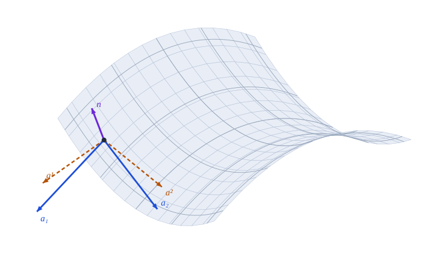
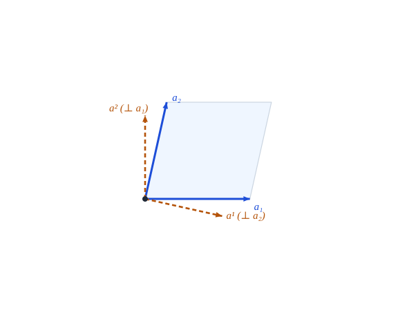

Vectores básicos, normal y tensor métrico de una superficie

Figura 8.1: Paraboloide hiperbólico \(z=-\tfrac12(x^2/R_x+y^2/R_y)\) con \(R_x=3\), \(R_y=-3\). En el punto marcado: base tangente \(\mathbf{a}_1,\mathbf{a}_2\) (azul), base recíproca \(\mathbf{a}^1,\mathbf{a}^2\) (ámbar, discontinua) y normal \(\hat{\mathbf{a}}_3\) (violeta). Todos los vectores están ampliados \(\times1{,}5\). Los vectores se calculan con Geometria y se verifican \(\mathbf{a}^\alpha\cdot\mathbf{a}_\beta=\delta^\alpha_\beta\) y \(\hat{\mathbf{a}}_3\cdot\mathbf{a}_\alpha=0\) antes de dibujarlos.
Cómo se describe una superficie curva con dos números y qué vectores y qué normal tiene en cada punto
Objetivos y prerrequisitos
Objetivos. Al terminar el tema sabrás:
definir una superficie regular parametrizada y su plano tangente;
construir los vectores básicos tangentes \(\mathbf{a}_\alpha\), la normal unitaria\(\hat{\mathbf{a}}_3\) y la base recíproca \(\mathbf{a}^\alpha\);
calcular el tensor métrico \(a_{\alpha\beta}\), su determinante \(a\) y su inversa;
relacionar la base de la superficie con la base tridimensional \(\mathbf{g}_i\) del tema de bases;
comprobar en Julia ortogonalidad y reciprocidad sobre una esfera y un paraboloide hiperbólico.
Hasta aquí todo ocurría en el plano o en el espacio con coordenadas curvilíneas. Una lámina es distinta: su geometría la gobierna una superficie media curva. Para describirla se eligen dos parámetros \((\theta^1,\theta^2)\) sobre la superficie y una tercera coordenada \(\theta^3\), la distancia medida a lo largo de la normal. La posición de un punto cualquiera de la lámina es
donde \({}_0\mathbf{r}\) es el vector de posición de la superficie de referencia (\(\theta^3=0\)) y \(\hat{\mathbf{a}}_3\) su normal unitaria.
ImportanteIdea clave
La geometría de una superficie se estudia con dos bases a la vez: la tangente (dos vectores, \(\mathbf{a}_\alpha\)) y la normal (\(\hat{\mathbf{a}}_3\)). Lo que ya sabemos de bases covariantes y recíprocas vale aquí, con la normal como tercer vector.
8.2 Superficie regular y plano tangente
Definición 8.1 (Superficie regular parametrizada) Una superficie regular parametrizada es una aplicación \(\mathbf{r}:\ U\subset\mathbb{R}^2\to\mathbb{R}^3\), \((\theta^1,\theta^2)\mapsto{}_0\mathbf{r}\), de clase \(C^2\) en \(U\), tal que los vectores \[
\mathbf{a}_\alpha=\frac{\partial\,{}_0\mathbf{r}}{\partial\theta^\alpha}\equiv{}_0\mathbf{r}_{,\alpha},\qquad\alpha=1,2,
\tag{8.2}\] son linealmente independientes en todo punto, es decir, \(\mathbf{a}_1\times\mathbf{a}_2\neq\mathbf{0}\).
Los \(\mathbf{a}_\alpha\) son tangentes a las curvas coordenadas (Figura 8.1). Generan en cada punto el plano tangente.
La normal depende del orden de las coordenadas: intercambiar \(\theta^1\leftrightarrow\theta^2\) cambia el signo de \(\hat{\mathbf{a}}_3\). Este libro fija ecuación 8.3, de modo que \((\mathbf{a}_1,\mathbf{a}_2,\hat{\mathbf{a}}_3)\) es una terna dextrógira. Más adelante (Sección 9.2.1) veremos que el signo de la curvatura depende de esta elección.
8.3 El tensor métrico de la superficie
Definición 8.3 (Tensor métrico de la superficie)\[
a_{\alpha\beta}=\mathbf{a}_\alpha\cdot\mathbf{a}_\beta,\qquad a=\det(a_{\alpha\beta})=a_{11}a_{22}-a_{12}^2 ,
\tag{8.4}\] y \((a^{\alpha\beta})=(a_{\alpha\beta})^{-1}\).
Es el tensor \(g_{\alpha\beta}\) del tema de bases evaluado en \(\theta^3=0\). Como la matriz es \(2\times2\) se invierte a mano:
Proposición 8.1 (Área del paralelogramo tangente)\(\|\mathbf{a}_1\times\mathbf{a}_2\|=\sqrt{a}\), y por tanto \(\mathbf{a}_1\times\mathbf{a}_2=\sqrt{a}\;\hat{\mathbf{a}}_3\). El elemento de área de la superficie es \[
dA=\sqrt{a}\;d\theta^1d\theta^2 .
\tag{8.6}\]
Es la identidad de Lagrange: \(\|\mathbf{u}\times\mathbf{v}\|^2=\|\mathbf{u}\|^2\|\mathbf{v}\|^2-(\mathbf{u}\cdot\mathbf{v})^2\). Con \(\mathbf{u}=\mathbf{a}_1\), \(\mathbf{v}=\mathbf{a}_2\) resulta \(a_{11}a_{22}-a_{12}^2=a\). La segunda afirmación es la definición ecuación 8.3, y ecuación 8.6 se sigue de ecuación 5.4. \(\blacksquare\)
8.4 La terna de bases
Proposición 8.2 (Bases covariante y recíproca de la superficie) En cada punto hay dos ternas, \(\{\mathbf{a}_1,\mathbf{a}_2,\hat{\mathbf{a}}_3\}\) y \(\{\mathbf{a}^1,\mathbf{a}^2,\hat{\mathbf{a}}_3\}\), con
\(\mathbf{a}^\alpha=a^{\alpha\beta}\mathbf{a}_\beta\) y \(\mathbf{a}_\alpha=a_{\alpha\beta}\mathbf{a}^\beta\), ambos tangentes a la superficie;
\(\mathbf{a}^\alpha\cdot\mathbf{a}_\beta=\delta^\alpha_\beta\) y \(\hat{\mathbf{a}}_3\cdot\mathbf{a}_\alpha=\hat{\mathbf{a}}_3\cdot\mathbf{a}^\alpha=0\);
\(\mathbf{a}^3=\hat{\mathbf{a}}_3\) (la normal es su propia recíproca);
y (2) son Proposición 4.1 aplicada en \(\mathbb{R}^3\) a la base \(\{\mathbf{a}_1,\mathbf{a}_2,\hat{\mathbf{a}}_3\}\), cuya métrica es \(\operatorname{diag}(a_{\alpha\beta},1)\) por la ortogonalidad de \(\hat{\mathbf{a}}_3\). Por esa estructura en bloques, la recíproca de \(\mathbf{a}_\alpha\) no tiene componente normal y \(\mathbf{a}^3=\hat{\mathbf{a}}_3\), lo que da (3). Para (4), la primera relación es Proposición 8.1. Para la segunda, \(\hat{\mathbf{a}}_3\times\mathbf{a}_\alpha\) es tangente (luego combinación de los \(\mathbf{a}^\beta\)) y su producto con \(\mathbf{a}_\gamma\) vale \((\hat{\mathbf{a}}_3\times\mathbf{a}_\alpha)\cdot\mathbf{a}_\gamma=\hat{\mathbf{a}}_3\cdot(\mathbf{a}_\alpha\times\mathbf{a}_\gamma)=\bar e_{\alpha\gamma}\), que es el de \(\bar e_{\alpha\beta}\mathbf{a}^\beta\) con \(\mathbf{a}_\gamma\). \(\blacksquare\)
Dentro del plano tangente, el problema es el de las bases oblicuas del tema de bases (Sección 4.2): \(\mathbf{a}^1\perp\mathbf{a}_2\) y \(\mathbf{a}^2\perp\mathbf{a}_1\) (Figura 8.2). Esta figura reconstruye el plano tangente solo con los números \(a_{\alpha\beta}\) del punto, sin necesidad del espacio tridimensional: la métrica determina la geometría dentro del plano.

Figura 8.2: Plano tangente en el punto de la figura anterior, reconstruido solo con la métrica \(a_{\alpha\beta}\) (\(\mathbf{a}_1\) horizontal, \(\mathbf{a}_2\) con el ángulo que impone \(a_{12}\)). Se comprueba \(\mathbf{a}^\alpha\cdot\mathbf{a}_\beta=\delta^\alpha_\beta\).
8.4.1 Relación con la base tridimensional
Si \(\mathbf{r}={}_0\mathbf{r}+\theta^3\hat{\mathbf{a}}_3\) (ecuación 8.1), en \(\theta^3=0\) se tiene \(\mathbf{g}_\alpha=\mathbf{a}_\alpha\), \(\mathbf{g}_3=\hat{\mathbf{a}}_3\) y \(g_{\alpha\beta}=a_{\alpha\beta}\). Fuera de la superficie, \(\mathbf{g}_\alpha\) y \(g_{\alpha\beta}\) dependen de \(\theta^3\) y de la curvatura (Sección 10.5). Además,
\[
\sqrt{a}=\hat{\mathbf{a}}_3\cdot(\mathbf{a}_1\times\mathbf{a}_2),\qquad \sqrt{g}=\mathbf{g}_3\cdot(\mathbf{g}_1\times\mathbf{g}_2) \xrightarrow{\ \theta^3=0\ }\sqrt a .
\tag{8.8}\]
8.5 Ejemplo resuelto: la esfera
Ejemplo 8.1 (Ejemplo resuelto: base, métrica y normal de la esfera) Con \(\mathbf{r}=R(\sin\theta^1\cos\theta^2,\ \sin\theta^1\sin\theta^2,\ \cos\theta^1)\) (\(\theta^1\) colatitud, \(\theta^2\) azimut): \[
\mathbf{a}_1=R(\cos\theta^1\cos\theta^2,\cos\theta^1\sin\theta^2,-\sin\theta^1),\qquad
\mathbf{a}_2=R\sin\theta^1(-\sin\theta^2,\cos\theta^2,0).
\] Son ortogonales: \(a_{12}=0\), con \(a_{11}=R^2\) y \(a_{22}=R^2\sin^2\theta^1\), luego \(a=R^4\sin^2\theta^1\) y \(\sqrt a=R^2\sin\theta^1\). El producto vectorial es \(\mathbf{a}_1\times\mathbf{a}_2=R^2\sin\theta^1\,(\sin\theta^1\cos\theta^2,\sin\theta^1\sin\theta^2,\cos\theta^1)\), de módulo \(R^2\sin\theta^1=\sqrt a\) ✓ y dirección radial saliente: con este orden de coordenadas, \(\hat{\mathbf{a}}_3=\mathbf{r}/R\).
Para \(R=2\) y \(\theta^1=1\): \(\sqrt a=4\sin1\approx3{,}366\).
Pon a prueba lo anterior. Los ejercicios se corrigen en tu navegador y no envían nada a ningún sitio.
Para la esfera de radio \(R=2\), ¿cuánto vale \(\sqrt a\) en \(\theta^1=1\) rad?
\(\sqrt a=R^2\sin\theta^1=4\sin1=3{,}366\).
Con \(\hat{\mathbf{a}}_3=\mathbf{a}_1\times\mathbf{a}_2/\|\cdot\|\) y las coordenadas \((\theta^1,\theta^2)=(\text{colatitud},\text{azimut})\), ¿hacia dónde apunta la normal de la esfera?
Hacia dentro (hacia el centro)
Hacia fuera (radial saliente)
Tangente al paralelo
Tangente al meridiano
Hacia fuera: \(\mathbf{a}_1\times\mathbf{a}_2\propto\mathbf{r}\). Si se intercambia el orden de las coordenadas, la normal apunta hacia dentro.
NotaUn poco de historia: Monge y las superficies reguladas
Gaspard Monge estudió sistemáticamente las superficies con el análisis a finales del siglo XVIII: en 1771 presentó su trabajo sobre curvas del espacio y superficies desarrollables, en 1776 introdujo las líneas de curvatura y reunió su obra en Application de l’analyse à la géométrie (París, 1807; una primera versión, Feuilles d’analyse appliquée à la géométrie, se sitúa en 1795). En ese libro muestra, entre otras, que el hiperboloide de una hoja y el paraboloide hiperbólico son superficies regladas: cada una puede engendrarse de dos maneras distintas por una recta en movimiento.
Las fórmulas ecuación 8.9 se verifican contra el código en julia/test/runtests.jl («Superficies: paraboloide hiperbólico de bordes curvos»). La continuación de este ejemplo (curvatura, símbolos de Christoffel) está en el tema del paraboloide hiperbólico.
8.7 Ejercicios
Esfera. Calcula \(\mathbf{a}_\alpha\), \(a_{\alpha\beta}\), \(a\) y \(\hat{\mathbf{a}}_3\) para la esfera con \(\mathbf{r}=\rho(\sin\theta^1\cos\theta^2,\sin\theta^1\sin\theta^2,\cos\theta^1)\). ¿Hacia dónde apunta \(\hat{\mathbf{a}}_3\)?
NotaSolución
Ver el Ejemplo 8.1 con \(R=\rho\): \(\hat{\mathbf{a}}_3=\mathbf{r}/\rho\) (saliente).
Inversa \(2\times2\). Demuestra ecuación 8.5 a partir de la fórmula de la inversa de una matriz \(2\times2\).
NotaSolución
\(\begin{pmatrix}a_{11}&a_{12}\\a_{12}&a_{22}\end{pmatrix}^{-1}=\dfrac1a\begin{pmatrix}a_{22}&-a_{12}\\-a_{12}&a_{11}\end{pmatrix}\) con \(a=a_{11}a_{22}-a_{12}^2\).
Definida positiva. Prueba que \(a_{\alpha\beta}\) es definida positiva y que \(a>0\) para una superficie regular.
NotaSolución
Es una matriz de Gram de vectores linealmente independientes: \(\lambda^\alpha\lambda^\beta a_{\alpha\beta}=\|\lambda^\alpha\mathbf{a}_\alpha\|^2>0\) si \(\lambda\neq0\); y \(a=\|\mathbf{a}_1\times\mathbf{a}_2\|^2>0\).
Orden de las coordenadas. Cambia \((\theta^1,\theta^2)\to(\theta^2,\theta^1)\) en el paraboloide y comprueba con Geometria que \(\hat{\mathbf{a}}_3\) cambia de signo.
NotaSolución
r2 = θ -> paraboloide_curvo(3.0, -2.0)(reverse(θ)); normal_unitaria(base_superficie(r2, θ)) es el opuesto de la de r.
Área. Calcula el área de la porción del paraboloide con \(|x|\le1\), \(|y|\le1\) y \(R_x=-R_y=3\) integrando \(\sqrt a\) numéricamente.
NotaSolución
\(\sqrt a=\sqrt{1+(x^2+y^2)/9}\); con la regla del punto medio en un mallado de \(400\times400\) el área es \(\approx4{,}145\) (algo mayor que el área plana, \(4\)).
La doy por superada si…
Defino una superficie regular parametrizada y su plano tangente.
Calculo \(\mathbf{a}_\alpha\), \(\hat{\mathbf{a}}_3\), \(a_{\alpha\beta}\) y \(a\) para una superficie dada (esfera, paraboloide).
Sé que \(\mathbf{a}^\alpha\) es tangente y que \(\mathbf{a}^\alpha\cdot\mathbf{a}_\beta=\delta^\alpha_\beta\).
Sé que \(\|\mathbf{a}_1\times\mathbf{a}_2\|=\sqrt a\) y que la normal depende del orden de las coordenadas.
Qué queda pendiente. El área del ejercicio 5 es un valor numérico aproximado; figuras con revisión visual pendiente; referencias no leídas línea a línea.
Lipschultz, M. 1969. Differential Geometry. Schaum’s Outlines.
Costa, A. F., M. Gamboa, y A. M. Porto. 1997. Ejercicios de geometría diferencial de curvas y superficies. Sanz y Torres.
Weatherburn, C. E. 1927. Differential Geometry. Cambridge Press.
Struik, D. J. 1955. Geometría Diferencial Clásica. Aguilar.
Carmo, M. do. 1994. Geometría diferencial de curvas y superficies. Alianza Universidad.
Referencias
Son las mismas que aparecen en el margen, junto al texto.
Carmo, M. do. 1994. Geometría diferencial de curvas y superficies. Alianza Universidad.
Costa, A. F., M. Gamboa, y A. M. Porto. 1997. Ejercicios de geometría diferencial de curvas y superficies. Sanz y Torres.
Lipschultz, M. 1969. Differential Geometry. Schaum’s Outlines.
Struik, D. J. 1955. Geometría Diferencial Clásica. Aguilar.
Weatherburn, C. E. 1927. Differential Geometry. Cambridge Press.